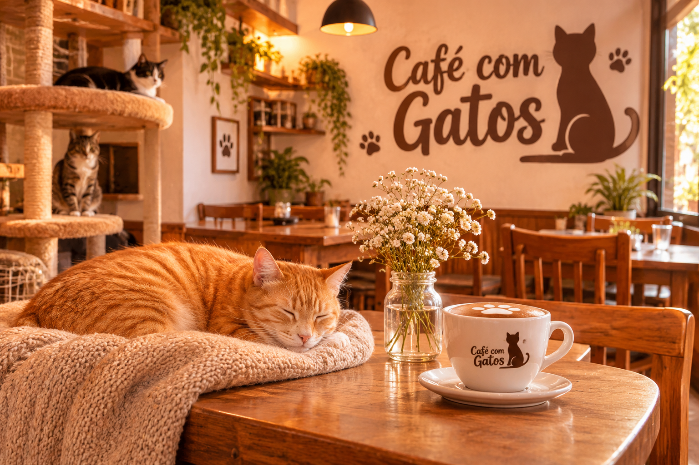

Amor pelos animais
O bem-estar dos nossos gatinhos está sempre em primeiro lugar.
O Café com Gatos nasceu da combinação de duas grandes paixões: o amor por café e o carinho pelos animais.
Criamos um espaço onde as pessoas podem aproveitar bebidas deliciosas, experimentar sabores especiais e compartilhar momentos únicos na companhia de gatinhos muito especiais.
Acreditamos que pequenos momentos podem transformar o dia de alguém, principalmente quando acompanhados de uma boa xícara de café e um ronronar de felicidade.

Nossa missão é proporcionar momentos de tranquilidade, alegria e conexão, oferecendo um ambiente acolhedor onde pessoas e gatos possam conviver de maneira respeitosa e harmoniosa.
Tudo o que fazemos é guiado pelo carinho, respeito e dedicação.
O bem-estar dos nossos gatinhos está sempre em primeiro lugar.
Trabalhamos para oferecer cafés, bebidas e comidas preparados com dedicação.
Queremos que todos se sintam em casa, cercados de carinho e tranquilidade.
Valorizamos a convivência responsável e respeitamos o espaço de cada animal.
Estamos esperando por você, com um café fresquinho e muitos ronronares.
Conheça nossos gatinhos